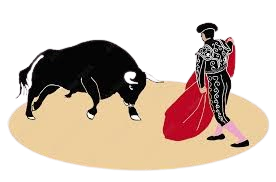
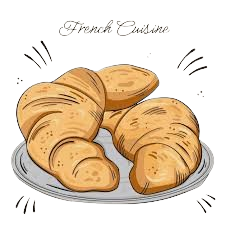
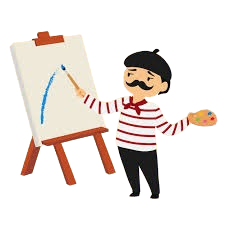
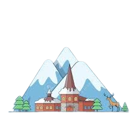

ESPAÑA
MADRID


Madrid tiene una gran cantidad de museos, monumentos históricos y sitios culturales que explorar, ofrece una variada gastronomía con platos típicos como el cocido madrileño, los churros con chocolate y una gran cantidad de tapas.
Madrid es famoso por su vibrante vida nocturna, con una gran cantidad de bares, discotecas y eventos culturales que duran hasta altas horas de la noche.
Además del Retiro, Madrid cuenta con otros parques como Casa de Campo y Madrid Río, ideales para pasear y relajarse.
Si deseas visitarlo debes tomar en cuenta lo siguiente:
Al ser un destino turístico muy popular, algunos lugares pueden estar muy concurridos, especialmente durante la temporada alta, puede ser cara, especialmente en términos de alojamiento y comida en zonas turísticas. Aunque el transporte público es bueno, el tráfico en la ciudad puede ser intenso y las horas punta pueden ser problemáticas.GRANADA


Con la Alhambra, el Generalife, la Capilla Real y el Albaicín, Granada está repleta de sitios históricos y culturales,
La proximidad a Sierra Nevada ofrece oportunidades para esquiar en invierno y hacer senderismo en verano y
La tradición de tapas gratis hace que comer en Granada sea una experiencia única y económica. Cuenta
con una gran población de estudiantes, la ciudad tiene una vibrante vida nocturna y una oferta cultural dinámica.
Granada disfruta de un clima mediterráneo, con inviernos suaves y veranos calurosos.
Si deseas visitarlo debes tomar en cuenta lo siguiente:
La Alhambra y otros sitios turísticos pueden estar muy concurridos, especialmente durante la temporada alta sus veranos pueden ser muy calurosos, con temperaturas que a veces superan los 40 grads Celsius y unque Granada tiene un aeropuerto, los vuelos directos son limitados, por lo que muchas veces es necesario volar a Málaga y luego trasladarse.MALLORCA


La isla cuenta con una rica historia y una mezcla fascinante de influencias culturales,
Podrás probar platos tradicionales y delicias locales en los numerosos restaurantes y bares, Ofrece oportunidades de actividades al aire libre: Desde senderismo hasta deportes acuáticos, hay muchas formas de disfrutar del aire libre en Mallorca.
Si deseas visitarlo debes tomar en cuenta lo siguiente:
Muchas veces el turismo masivo puede tener un impacto negativo en el medio ambiente, como la contaminación y la congestión tambien es posible que te enfrentes a algunas barreras de comunicación, especialmente fuera de las zonas turísticas principales.FRANCIA
PARIS


París es hogar de algunos de los monumentos y museos más famosos del mundo, como la Torre Eiffel, el Louvre y Notre Dame,
La cocina francesa es mundialmente famosa, y en París podrás disfrutar de una amplia variedad de deliciosos platos y vinos
la arquitectura de París es impresionante, con hermosos edificios, calles adoquinadas y encantadores cafés.
La ciudad ofrece una amplia gama de bares, clubes y espectáculos para disfrutar después del anochecer. Desde boutiques de alta moda hasta mercados callejeros, París es un paraíso para los amantes de las compras.
Si deseas visitarlo debes tomar en cuenta lo siguiente:
París puede ser una de las ciudades más caras del mundo, especialmente en términos de alojamiento, comida y atracciones turísticas, Como uno de los destinos turísticos más populares del mundo, París puede estar abarrotado de turistas durante todo el año, lo que puede hacer que algunas atracciones sean abrumadorasCANNES


Es una ciudad peatonal que puede ser privatizada para un evento ofreciendo a los visitantes una experiencia muy particular.
Desventajas de Visitar Cannes
Durante varios eventos, la ciudad puede estar abarrotada de turistas dificultando asi la mivilidad y afectando a la visita de algunos visitantes, durante verano llegan mucho turistas afectando en filas y generando que los precios aumenten.


Marsella es una ciudad multicultural con una rica historia que se refleja en su arquitectura, gastronomía y población diversa,
como es el puerto más grande de Francia, Marsella ofrece una animada escena portuaria con cafés, restaurantes y mercados que reflejan su herencia marítima.
La ciudad es conocida por su cocina mediterránea, con platos deliciosos como la bouillabaisse (sopa de pescado) y una amplia variedad de mariscos frescos
cuenta tambien con una rica historia que se remonta a miles de años, con sitios históricos como el Vieux Port, la Basílica de Notre-Dame de la Garde y el Fuerte Saint-Jean
Si deseas visitarlo debes tomar en cuenta lo siguiente:
Aunque muchos habitantes de Marsella hablan inglés, el francés es el idioma principal y puede haber barreras de comunicación para quienes no lo hablan, puede experimentar temperaturas muy altas durante los meses de verano, lo que puede hacer que algunas actividades al aire libre sean menos cómodas. Debido a su gran tamaño y a la actividad industrial en el área, Marsella puede experimentar problemas de contaminación atmosférica en algunas áreas.ALEMANIA


Berlín es una ciudad rica en historia y cultura, con una gran cantidad de museos, galerías de arte, sitios históricos y monumentos, como el Muro de Berlín, el Reichstag y la Isla de los Museos,
es conocida por su animada vida nocturna, con una amplia variedad de bares, clubes y eventos que se extienden hasta las primeras horas de la mañana.
Es una ciudad diversa y multicultural, con una población internacional y una mezcla de culturas que se refleja en su comida, arte y música.
La ciudad es famosa por su arte callejero y grafitis, con obras de artistas reconocidos mundialmente como Banksy
Si deseas visitarlo debes tomar en cuenta lo siguiente:
conclusi


Dortmund es conocida por su ferviente pasión por el fútbol, y visitar el Estadio Signal Iduna Park para presenciar un partido del Borussia Dortmund es una experiencia emocionante para muchos aficionados al deporte.
La ciudad tiene una rica historia industrial, y lugares como el Museo del Ferrocarril de Dortmund ofrecen una visión fascinante del pasado industrial de la región,
cuenta con numerosos parques y áreas verdes, como el Parque Westfalen, que ofrecen un escape tranquilo de la vida urbana y oportunidades para actividades al aire libre.
Si deseas visitarlo debes tomar en cuenta lo siguiente:
Aunque Dortmund tiene algunas atracciones interesantes, puede carecer del mismo nivel de patrimonio histórico y cultural que otras ciudades alemanas más grandes. Muchos de los habitantes de Dortmund hablan inglés, el alemán es el idioma principal y puede haber barreras de comunicación para aquellos que no lo hablan.


Hamburgo es el segundo puerto más grande de Europa y ofrece una fascinante historia marítima, con oportunidades para explorar el puerto, realizar cruceros fluviales y visitar museos marítimos.
Hamburgo tiene una vibrante escena nocturna, con una gran variedad de bares, clubes y locales de música en vivo que satisfacen todos los gustos.
3. Cultura y arte: La ciudad alberga una gran cantidad de museos, galerías de arte y teatros que ofrecen una rica experiencia cultural, incluido el famoso Kunsthalle y el Teatro Estatal de Hamburgo
Si deseas visitarlo debes tomar en cuenta lo siguiente:
Hamburgo puede ser una ciudad cara para visitar, especialmente en términos de alojamiento y comida en áreas turísticas. Como una ciudad popular entre los turistas, especialmente durante los meses de verano, algunas áreas pueden estar abarrotadas y pueden surgir largas filas en atracciones populares. Aunque muchos habitantes de Hamburgo hablan inglés, el alemán es el idioma principal y puede haber barreras de comunicación para aquellos que no lo hablanREINO UNIDO


Manchester tiene una rica historia industrial y cultural, con lugares de interés como el Museo de Ciencia e Industria y la Biblioteca John Rylands que ofrecen una visión fascinante del pasado de la ciudad.
Manchester es conocida por su vibrante escena musical, con una larga lista de bandas y artistas famosos que han surgido de la ciudad, así como una gran variedad de clubes y locales de música en vivo.
Deporte: La ciudad es el hogar de dos equipos de fútbol de renombre mundial, Manchester United y Manchester City, y ofrece la oportunidad de presenciar partidos emocionantes en el Estadio Old Trafford y el Etihad Stadium.
Si deseas visitarlo debes tomar en cuenta lo siguiente:
El clima en Manchester puede ser impredecible, con lluvias frecuentes y temperaturas frescas durante gran parte del año, como una ciudad grande y popular entre los turistas, Manchester puede estar abarrotada, especialmente en áreas turísticas y durante eventos importantes. Manchester es una ciudad grande y dispersa, por lo que puede requerir tiempo y planificación para desplazarse entre diferentes atracciones y lugares de interés.


Manchester tiene una rica historia industrial y cultural, con lugares de interés como el Museo de Ciencia e Industria y la Biblioteca John Rylands que ofrecen una visión fascinante del pasado de la ciudad.
Manchester es conocida por su vibrante escena musical, con una larga lista de bandas y artistas famosos que han surgido de la ciudad, así como una gran variedad de clubes y locales de música en vivo.
3 La ciudad es el hogar de dos equipos de fútbol de renombre mundial, Manchester United y Manchester City, y ofrece la oportunidad de presenciar partidos emocionantes en el Estadio Old Trafford y el Etihad Stadium.
Si deseas visitarlo debes tomar en cuenta lo siguiente:
Londres puede ser una de las ciudades más caras del mundo para visitar, especialmente en términos de alojamiento, comida y entretenimiento. , como una de las ciudades más populares del mundo entre los turistas, Londres puede estar abarrotada, especialmente en áreas turísticas y durante eventos importantes.El clima en Londres puede ser variable y lluvioso durante gran parte del año, lo que puede afectar las actividades al aire libre y los planes de viaje. El sistema de transporte público de Londres puede ser congestionado y caro, especialmente durante las horas pico, y es posible que encuentres problemas de retrasos y cancelaciones. ,aunque en general Londres es una ciudad segura para visitar, la delincuencia puede ser un problema en algunas áreas, especialmente en horarios nocturnos y en lugares concurridos.


FINLANDIA


Kouvola está rodeada de hermosos bosques, lagos y paisajes naturales que ofrecen oportunidades para practicar senderismo, ciclismo y actividades al aire libre.
La ciudad alberga el parque de atracciones Tykkimäki, que cuenta con montañas rusas, toboganes acuáticos y otras diversiones para toda la familia.
Kouvola tiene una rica historia industrial y cultural, con museos como el Museo de Arte de Kouvola y el Museo de la Historia de la Región de Kouvola que ofrecen una visión de la historia local.
Kouvola ofrece un ambiente tranquilo y relajado, lejos del bullicio de las grandes ciudades,
Si deseas visitarlo debes tomar en cuenta lo siguiente:
Al igual que otras partes de Finlandia, Kouvola experimenta inviernos largos y fríos, con temperaturas muy bajas y poca luz solar durante los meses de invierno. Aunque Kouvola ofrece una variedad de actividades y atracciones, puede requerir viajar distancias largas para visitar otros destinos turísticos populares en Finlandia. limitada de servicios turísticos: Aunque Kouvola tiene una variedad de servicios para turistas, puede no ofrecer la misma cantidad de opciones de alojamiento, restaurantes y actividades que ciudades más grandes. Aunque muchos finlandeses hablan inglés, el finlandés y el sueco son los idiomas oficiales, lo que puede resultar en barreras de comunicación para algunos visitantes que no hablan estos idiomas. Algunas actividades y atracciones en Kouvola pueden estar limitadas por las estaciones, especialmente durante los meses de invierno cuando las actividades al aire libre pueden ser menos accesibles.


Helsinki es conocida por su diseño innovador y arquitectura moderna, con una combinación única de edificios históricos y contemporáneos que reflejan la creatividad finlandesa.
A pesar de ser una ciudad cosmopolita, Helsinki ofrece fácil acceso a la naturaleza, con parques, bosques y la costa del mar Báltico cercanos, que proporcionan oportunidades para actividades al aire libre como caminatas y paseos en bote.
Helsinki es una de las ciudades más seguras del mundo, con bajos índices de criminalidad y una sensación general de seguridad para los visitantes.
La ciudad alberga una vibrante escena cultural, con numerosos museos, galerías de arte, teatros y festivales que ofrecen una amplia variedad de experiencias culturales para explorar.